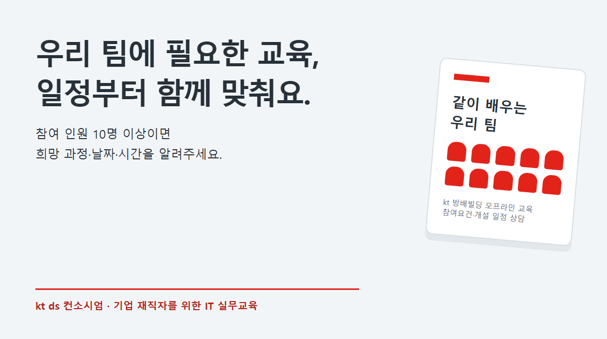

 | |||||
컨소시엄 협약서 갱신을 요청드립니다.안녕하세요. kt ds 인재육성팀 이홍은입니다. 공동훈련센터인 주식회사 케이티디에스의 대표자가 옥경화 대표로 변경되었습니다. 변경된 대표자 명의로 협약서를 다시 받고자 하오니 협조 부탁드립니다.
문의사항은 아래 연락처로 알려주시면 안내해 드리겠습니다. 함께 안내드립니다: 컨소시엄 교육참여요건을 충족하는 협약기업 재직자는 kt ds 컨소시엄 교육에 참여할 수 있습니다. 과정명을 누르면 교육 대상과 커리큘럼을 볼 수 있습니다. | |||||
| |||||
12명 이상이면 희망 일정을 알려주세요참여요건을 충족하는 재직자 12명 이상이 모이면, 원하시는 과정과 날짜·시간대로 교육 개설을 상담해 드립니다. 강사와 강의실을 확인한 뒤 일정을 함께 정합니다. 상담 요청만으로 개강이 확정되는 것은 아닙니다. 12명은 기업 맞춤 일정의 상담 기준이며, 이미 모집 중인 공개 과정은 개인별로 신청할 수 있습니다.
감사합니다. | |||||
| kt ds 인재육성팀 이홍은 hongeun.lee@kt.com kt ds 교육포털 2026년 kt ds 국가인적자원개발컨소시엄 교육 |